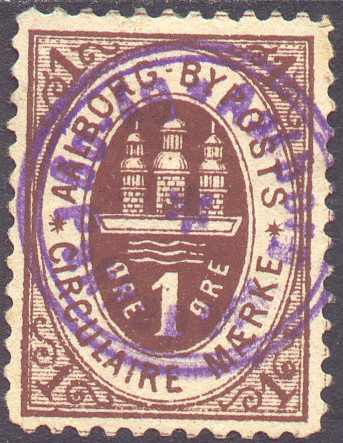
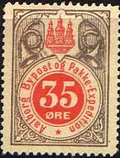
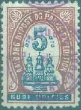
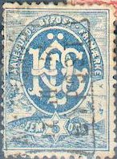
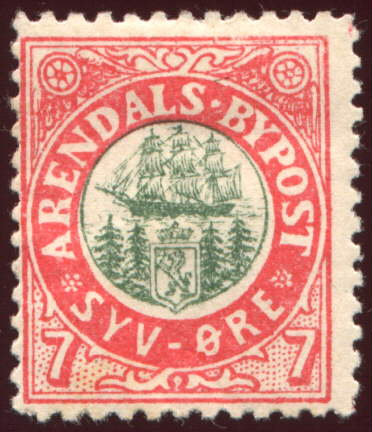
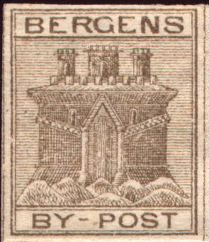
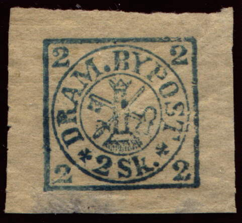
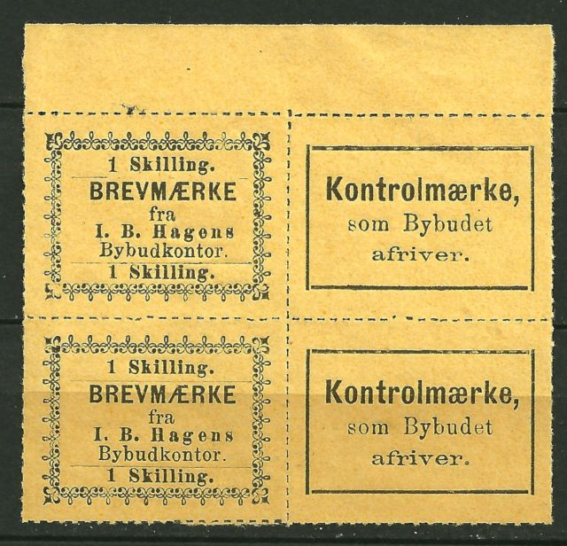

Return To Catalogue - Bypost overview
Note: on my website many of the
pictures can not be seen! They are of course present in the
catalogue;
contact me if you want to purchase the catalogue.
For more information see 'Die Privat-, Eisenbahn- und Dampschiffsmarken von Skandinavien u. Finnland' by O.Rommel (Glasewald 1909).
Issued stamps from 1884 to 1891.
Inscription 'Aalborgs Byposts Circulaire Maerke' 1 o brown (inscription 'Byposts', exists imperforate) 1 o green (inscription 'Bypost', exists imperforate) (Other values might exist) Surcharged

'2' on 1 c green
Inscription 'Aalborg Bypost Accord Maerke' (1886) 2 p blue (exists imperforated) (Other values might exist)
Castle, inscription 'Aalborg Bypost Pakke-Expedition' (issued 1885) 3 o green and red (exists printed tete-beche) Surcharged (provisional issue of 1886)
(Reduced size)
'1' on 3 o green and red
10 o black and brown 20 o green and black 25 o orange and green 25 o black and blue 50 o blue and brown Surcharged
'3' (two times) on 20 o green and black (Other values might exist)
Value in circle, casle in upper part, surrounded by two posthorns:

10 o blue and brown (exists imperforate) 25 o red and green 35 o grey and orange
3 o blue 5 o red Surcharged
'1' on 5 o red '2' on 3 o blue '2' and date on 3 o blue '2' and date on 5 o red '3' on 5 o red
50 o black, blue and gold
(Reduced sizes)
5 o red and black (1886, exists imperforate) Surcharged '3' (blue) on 5 o red and black

5 o brown and blue
I have seen the above 5 o stamp imperforate.
(Reduced sizes)
2 o brown (1887, accord maerke, exists imperforate) 3 o red (Pakke Expedition, exists imperforate)
Example of a postmark of the Aalborg Bypost, inscription 'Aalborg By-Og Pakkepost *' in a double circle:
(Whole envelope, reduced size)
From 1880 to 1891 the Aalesund local post issued its own stamps. The owner was Hans Sev. Öyen.
3 o brown on yellow 3 o brown on brown 3 o brown on red 3 o brown on grey 3 o brown on blue
Issued 6 December 1880. Proofs exist in black on several colours. According to the "Handbuch für Postmarkensammler für den permanenten Gebrauch Bestimmt (1881)" by Ferdinand Meyer was only the value 3 o brown on yellow (perforated) in official use. The other colors were issued for philatelic purposes only.

(Reduced views)
3 o red 5 o blue 7 o black
Imperforate stamps exist (remainders?). Proofs of the 3 o exist in several colours. A postcard exist in the same design: 5 o blue on blue. For more information see: http://www.nordische-staaten.de/laender/Norwegen/Bypost/bypost.html (in German by Dr. Reinhard Meyer).
Cancels:


The cancels that were used by the Aalesund Bypost
are (information obtained from the above mentioned website with
permission)
1) a 'AALESUND date BYPOST.' in three lines in a rectangle (26 x
17 mm) with the shortest sides moved inwards
2) one ring cancels (two types, 1858 and 1876)
3) a two ring cancel (1882)
Issued stamps from 1884 to 1891.
2 o blue 5 o blue
3 o red 5 o blue 10 o yellow 25 o green Surcharged 1 1/2 on 3 o red
10 o yellow 25 o green

15 o red postcard in the same design.

1 o brown 2 o green 3 o red 5 o blue (misprint 5 o red?) Surcharged 1/2 (manual surcharge) on 5 o blue 1 1/2 on 1 o brown (I've seen an inverted surcharge) 1 1/2 on 2 o green (I've seen an inverted surcharge) 1 1/2 on 5 o blue (surcharged sideways, error?)
I've seen imperforat color proofs http://www.ringphilmuseum.se/eng_lp_dansk.html in the values 1 o blue, 1 o violet, 1 o green, 1 o red, 2 o red, 2 o violet, 2 o brown, 2 o blue, 3 o brown, 3 o blue, 3 o green, 3 o violet, 5 o brown, 5 o violet, 5 o green

Stamp issued in 1890.
1 o brown 2 o violet 3 o red 5 o yellow Surcharged (1890) 1 1/2 on 1 o brown 1 1/2 on 2 o violet 1 1/2 on 3 o red 1 1/2 on 5 o yellow
I've seen some stamps with inscription 'AARHUS KIOSK SELSKAB' (issued 1900?) with a tower in the design, in the values 2 o brown, 5 o violet, 10 o green, 25 o orange, 1 Kr red.
I've also seen a parcel stamp with inscription 'Carl. C.Overgaard AARHUS MED FORSTEADERS GOSDTRANSPORT TELF.2580'. I've only seen the value 15 o red.
Railway stamps with inscription 'HAMMEL-AARHUS JERNBANE Godsfrimaerke' also exist (with antique train in the central circle), I've seen the values 20 o green and 25 o brown.
A stamp with inscription 'AasgaardsstrandsFod Post Een Brev Skilling af 3 Øre M. Anderßen Expediteur' in 5 lines should have been issued somewhere around 1877. This stamp is printed on yellow paper and imperforate. I have no further information regarding this stamp. Sorry, no picture available yet. http://www.nordische-staaten.de/laender/Norwegen/Bypost/bypost.html

(Image obtained thanks to Dr. Reinhard Meyer)
(reduced sizes)
2 o blue and brown 2 o brown and blue 5 o brown and blue 5 o green and red 7 o red and green 7 o blue and brown 10 o green and red 10 o red and green Surcharged

'5' on 7 o red and green '5' on 10 o green and red '2' in circle (1891, inverted overprints exist) on 7 o blue and brown
Some very rare manually surcharged stamps seem to exist '2' on 7 o blue and brown, '5' on 2 o brown and blue and '5' on 10 o red and green. I have never seen these stamps.
The above desing consists of the text 'Arendals Bypost Aviser' in a rectangle with solid circles in the corners, the stamp is perforated and it has black on green colour. I've seen these stamps cancelled with 'Arendals Bypost.' in two lines.
Postcard:
The above postcard exists with slightly different inscriptions and was issued in 1890. An other postcard exists, with '3 ore' on the left and right hand side (issued in red in 1887):
(Image obtained thanks to Dr. Reinhard Meyer)
More information can be found on: http://www.nordische-staaten.de/laender/Norwegen/Bypost/bypost.html by Dr. Reinhard Meyer.

(Image obtained thanks to Dr. Reinhard Meyer)
(2) sk brown
These stamps should have a dot behind "BY-POST". All reprints do not have this dot (these reprints exist also perforated). Four different kinds of reprints exist (see for more information: http://www.nordische-staaten.de/laender/Norwegen/Bypost/bypost.html, (in German, by Dr. Reinhard Meyer). Example of a reprint:

Reprint or forgery, image obtained thanks to Dr. Reinhard Meyer;
the design is different in many ways.
Besides reprints, two different kinds of forgeries also exist. Forgery 1 has no dot behind "BY-POST" and has a slightly different inscription for example the "G" of "BERGENS". The second forgery seems to be quite primitive and is printed in brown or yellow (information obtained from the above mentioned website).

(Image obtained thanks to Dr. Reinhard Meyer)
2 o black on lilac
Two reprints of the 2 o black on lilac stamp exist with larger upper part of the "P" of "BYPOST". An essay in red exists. Four forgeries exist. The first forgery has separating lines between the stamps, the number '2' smaller and flattened at the top, the upper part of the "P" of "BYPOST" is smaller than in the genuine stamps. The second forgery only has 9 shadelines in the lower right corner. The third and fourth forgery are in red and in green colour (according to the above mentioned website).
(reduced sizes, essay?)

Probably a reprint, note the different bottom left part of the
"2" and the different "P" in
"BYPOST".

2 sk red
A reprint with larger inscription "SKILLING" exist, the "S" of this reprint is also different; the upper part of this letter is larger. There are three forgeries. The first forgery has the large "2" smaller and the "G" of "BERGEN" different. The second forgery is printed primitively and the foot of the small "2" is straight. The third forgery is printed in black on yellow colour.
Reprints.
For stamps with inscription Kristianssund, see there.
2 o black on blue 4 o black on red 7 o black on violet 10 o black on yellow

(Image obtained with permission form Dr. Reinhard Meyer's
website)
4 o black 7 o red (with or without dot behind 'M') 10 o green Surcharged 4 o on 10 o green
For similar stamps with inscription Kristianssund, see there.

1 o red 2 o red 3 o red (exists imperforate) 5 o red 5 o blue 5 o green 10 o red
More information can be found on Dr. Reinhard Meyer's website http://www.nordische-staaten.de/laender/Norwegen/Bypost/bypost.html (in German).


(Image obtained thanks to Dr.Reinhard Meyer)

2 Sk green 2 Sk violet 2 Sk blue 2 Sk blue on lilac
The values 2 Sk red and 2 Sk red on yellow are proofs. Reprints also exist. Forgeries with different "G" and other differences exist.
(Sorry, no picture available yet)
1 Sk blue

(Image obtained thanks to Dr.Reinhard Meyer)

1 Sk blue (key in front of pillar) 1 Sk blue on lilac
A forgery exists of this stamp with the key behind the pillar and the sword different. Another forgery shows a thinner inscription. Reprints were also made of these stamps.
2 Sk blue (violet number) on green 2 Sk blue on yellow 2 Sk blue 2 Sk blue on lilac 4 Sk blue on yellow 4 Sk blue on lilac
Reprints and forgeries (slightly different design) of these stamps exist.
Value in Skilling

(Image obtained with permission from Dr.Reinhard Meyer)
2 Sk blue 2 Sk blue on brown 3 Sk red on blue and 4 Sk blue on yellow 4 Sk blue on lilac Value in Ore
1 o blue 2 o blue on yellow 3 o blue on green 3 o blue on lilac 4 o blue 5 o blue 10 o blue
Reprints of the above stamps exist. Forgeries exist of the 2 Sk blue in slightly different design, 5 o violet. The values 2 o blue on violet, 3 o blue on yellow, 3 o blue on green and3 o blue on violet have also been forged, they can be recognized by the fact that they do not have the dot behind 'DRAM'. Postal stationery in the same design exists (5 o blue).

(Image obtained thanks to Dr.Reinhard Meyer)

1 o blue on violet 2 o blue on yellow 3 o blue on green 3 o blue on lilac 4 o blue on blue 5 o blue on lilac 10 o blue on grey
Postal stationery in the same design exists (5 o blue).

(Image obtained thanks to Dr.Reinhard Meyer)
5 o red


(Images obtained with permission from Dr.Reinhard Meyer's
website)


Here with dot behind "Bybudkontor".
Some labels also seem to have been issued, inscription 'BREVMAERKE' and 'Kontrolmaerke' in black on yellow or black on red. These labels are known to have been forged. They have also been reprinted in a completely different type. For more information see: http://www.nordische-staaten.de/laender/Norwegen/Bypost/bypost.html (in German). Example of a reprint:

(Reprint, image obtained with permission from Dr.Reinhard Meyer's
website)


(Reprint, image obtained with permission from Dr.Reinhard Meyer's
website)
2 sk blue
Two forgeries exist of these stamps, for more information see: http://www.nordische-staaten.de/laender/Norwegen/Bypost/bypost.html (in German).


3 o black on yellow 5 o black on grey 10 o black on blue 25 o black on lilac
There are two sizes of these stamps, the second type being much smaller. The 3 o stamp of the second type is always with the '3' in mirror script.
Two types of postcards were issued by Eriksen, one with the dove design (3 o blue on red) and another with inscription 'Brev-Kort Drammens By & Pakkepost' (value 3 ore, black on red). Many stamps of this firm were cancelled to order.
On June 15, 1888, a hotel owner and stamp dealer(!), M. Børresen, started a local post office in Drammen. This first provisional issue, was in use only from June 15, 1888, to July 1, 1888. This stamp, 5 øre red on blue paper, was stamped by hand, 12 on a sheet, which explain the irregularity of distance between the stamps. Børresen's local post closed down on Dec. 31, 1888:
5 o red on blue

(4 stamps, one inverted)
(Reduced sizes)
3 o gold on blue 5 o black on green 10 o black on yellow
Proofs in several colours exist. Several postcards with the same design exist (3 o blue and 5 o red):
(Postcard, reduced size)
Drammen block of twelve 3 o reprints, made in 1976 from the
original stones. I've also seen a similar sheet with 12 red 3 o
reprints (also for the Drafnia '76 exhibition), but with a
'Drafnia '76' overprint on each stamp.
3 o blue 5 o green 15 o red
Unfinished imperforate stamps exist.


{kind=link}
{kind=link}
{kind=link}
{kind=link}
{kind=link}
{kind=link}
{kind=link}
{kind=link}
{kind=link}
{kind=link}